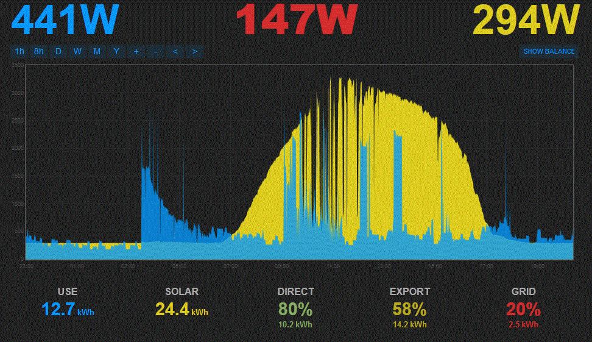

Hi, I've been running a new emonPi, monitoring my UK domestic SolarPV setup for just a few days and all seems very good. Very happy with the purchase. But...
I notice that there is an apparent baseload on the SolarPV feeds which I don't understand and would like to know if this is normal, or if I must do some calibration. In the below emoncms.org screen grab there is a constant c. 300W trace on the PV during the hours of darkness and this has been the same every night. The 4kW PV has Enecsys micro inverters.
I took solar & grid utility meter readings at the start and end of this screen grab and these give
solar generation: 22.3kWh
Grid import: 5kWh (= 1unit Economy7 plus 4units daytime)
In the same period, my emonPi CTs recorded
solar generation: 24.4kWh
calculated Grid import (ConsumerUnit CT "minus" Solar CT): 2.5kWh
I'd be grateful for any advice.
Thanks,
David.

Re: New install - Do I need to calibrate my CTs or Feeds?
All the components used in your emonPi are subject to manufacturing tolerances. The calibration settings are calculated to give the correct readings provided every component is exactly on the specified value. Normally we expect the variations of individual components to cancel each other out to some extent. In your case, the difference is apparently about 10% but it's confused by the standing generation.
The 300 W standing PV generation is worrying, we don't expect to see anything like that much normally, and it represents about 7.2 kWh over a day. That puts the scale error something like 20 - 25%, and that's way out. I think you need to find out where the 300 W is coming from before you change any scale factors. The first step will be to take the CT off the cable (don't unplug it) and leave it in mid-air as far from any magnetic fields as possible, and see what you get. If possible, assuming it's on the line cable, try it on the neutral instead - facing the other way of course. Do the same to the other CT just to see if the same thing is going on there.
The easiest place to make the adjustment for scale factor is in emonhub.conf file (accessible via your browser), and change the value for the PV input from node 5 (" [[5]] " - the order of the values corresponds with the list of names a couple of lines above) - from 1 to something like 0.91. But don't do this until you've investigated the standing value.
[N.B. This forum will be read-only from some time on 5 May for ever. See the Latest Blog post on the right for details. You'll need to join the new forums and link back to this post.]
Re: New install - Do I need to calibrate my CTs or Feeds?
this forum will be locked down later today. I have copied over the topic to the new forum in this topic
please go over there (signup if needed) and continue the discussion there
Thanks